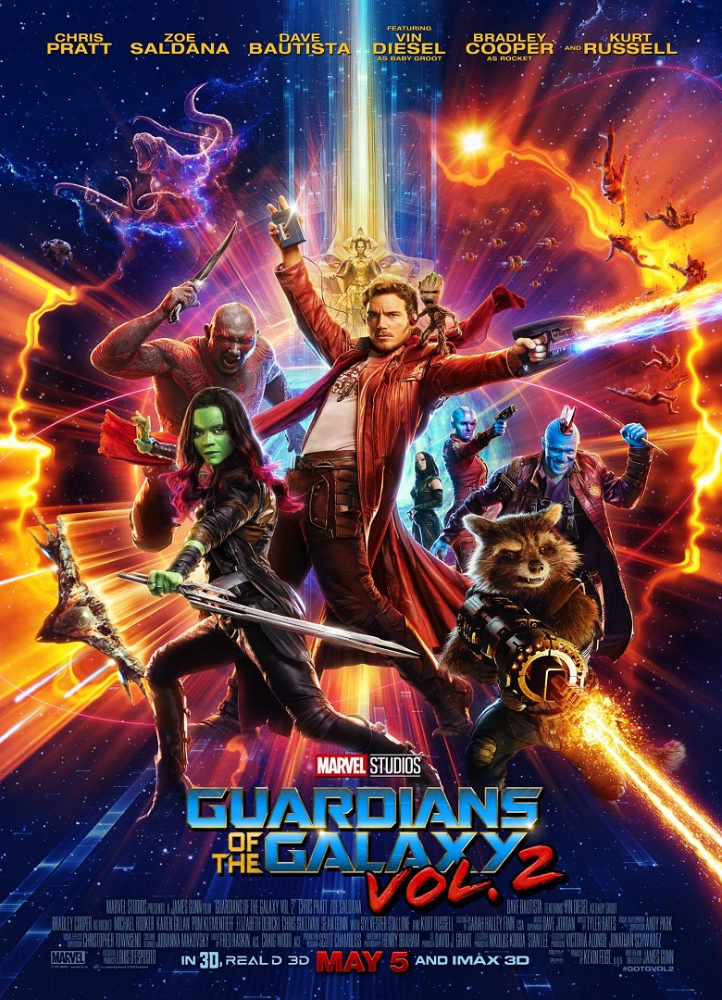

|  | |
Все в сборе: землянин Питер Квилл (Звездный Лорд), молчаливый громила Дракс, зеленокожая наемница Гамора, живое дерево Грут и говорящий енот. Герои не изменяют себе и с завидной регулярностью продолжают попадать в немыслимые ситуации, выпутываясь из них почти без ущерба (а иногда даже с пользой) для окружающих. На этот раз им предстоит раскрыть одну из самых главных тайн во всей Галактике: кто же на самом деле отец Питера Квилла? |
|
| Дата выхода: 2017 г. | Жанр: Боевик, Комедия |
| Страна: США | Режиссёр: Джеймс Ганн |
| Музыка: Тайлер Бейтс | Длительность: 136 мин. |